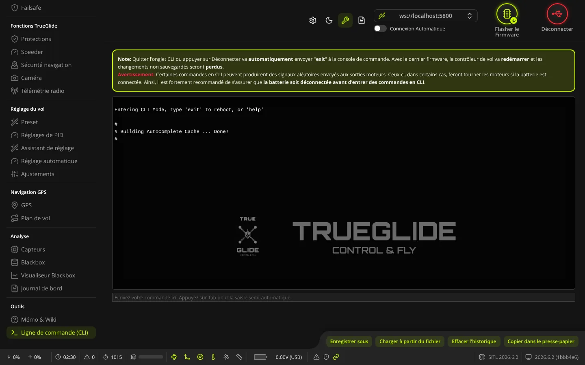
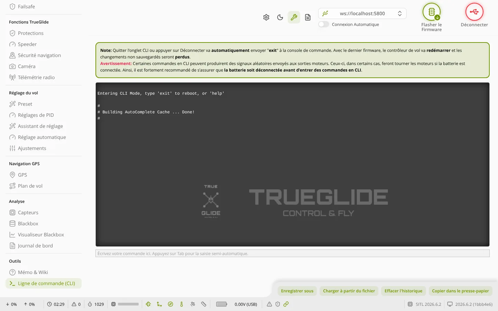

TRUE
TRUELigne de commande (CLI)
L'onglet Ligne de commande (CLI) (groupe « Outils ») sert à taper des commandes texte directement au contrôleur de vol : lire et changer n'importe quel réglage, sauvegarder toute la configuration dans un fichier ou la recharger.


Batterie débranchée : l'encadré du haut le rappelle, certaines commandes peuvent envoyer des signaux aux sorties moteurs. Travaillez en USB seul, ou Hélices retirées si la batterie doit rester branchée.
Entrer et sortir de la console
- En ouvrant l'onglet, le logiciel fait passer la carte en mode console. La carte répond
Entering CLI Mode, type 'exit' to reboot, or 'help', puis le logiciel prépare la saisie semi-automatique (ligne# Building AutoComplete Cache ... Done!). Pendant cette préparation, le champ de saisie est grisé. - Quitter l'onglet ou cliquer sur Déconnecter envoie automatiquement
exit: la carte redémarre et tout changement non enregistré avecsaveest perdu.
Taper une commande
- Champ de saisie (« Écrivez votre commande ici. Appuyez sur Tab pour la saisie semi-automatique. ») : tapez la commande puis Entrée pour l'envoyer.
- Tab : ouvre la liste de propositions (commandes, noms de réglages, valeurs). Les flèches haut et bas s'y déplacent, Tab ou Entrée choisit, Échap ferme la liste.
- Flèches haut et bas (liste fermée) : rappellent les commandes déjà tapées.
- Le texte de la console peut être sélectionné et copié à la souris.
Commandes utiles
| Commande | Effet |
|---|---|
diff all | Liste seulement ce qui diffère des valeurs par défaut, pour tous les profils. C'est la sauvegarde conseillée avant un flash. |
dump all | Liste tous les réglages, y compris ceux restés par défaut. Plus long, utile pour une sauvegarde complète. |
get <nom> | Affiche la valeur d'un réglage (une partie du nom suffit pour chercher). |
set <nom> = <valeur> | Change un réglage en mémoire vive. Rien n'est gardé sans save. |
save | Enregistre dans la carte puis la redémarre. |
exit | Quitte la console et redémarre sans enregistrer. |
version, status | Affichent le firmware (TRUEGLIDE, TRUENAV ou TRUENAV_LIGHT) et l'état de la carte. |
help | Liste les commandes. |
defaults | Remet tous les réglages d'usine et redémarre. À n'utiliser qu'après une sauvegarde. |
Sauvegarder sa configuration
- Cliquez sur Effacer l'historique pour vider la console.
- Tapez
diff all(oudump all) puis Entrée, et attendez la fin du texte. - Cliquez sur Enregistrer sous : le logiciel propose un fichier
.txtnommé d'après la carte, le nom du drone, la date et l'heure. Vous pouvez aussi utiliser Copier dans le presse-papier.
Recharger des commandes depuis un fichier
- Cliquez sur Charger à partir du fichier et choisissez un fichier
.txt. - Une fenêtre montre les commandes : vous pouvez les relire et les modifier avant l'envoi.
- Cliquez sur Exécuter : les lignes sont envoyées une à une à la carte.
- Si le fichier ne finit pas par
save, tapezsavepour garder les changements.
Après un changement de version du firmware, ne recollez pas un ancien
diff all tel quel : certains réglages ont changé de nom ou de plage. Refaites la configuration de base et ne recopiez que les lignes que vous comprenez. Voir aussi Flasher le Firmware.Boutons du bas
- Enregistrer sous : enregistre tout le texte de la console dans un fichier
.txt. - Charger à partir du fichier : envoie les commandes d'un fichier
.txt, après relecture (voir plus haut). - Effacer l'historique : vide la console affichée (ne touche pas à la carte).
- Copier dans le presse-papier : copie tout le texte de la console ; le bouton affiche « Copié ! » un court instant.
Le logiciel ne contacte jamais les serveurs de Betaflight : le contenu de la console ne leur est jamais envoyé.
Voir aussi
- Mémo & Wiki : les réglages propres à TRUEGLIDE à taper ici (
set nom = valeur, puissave). - Blackbox : choisir un mode debug sans passer par la console.